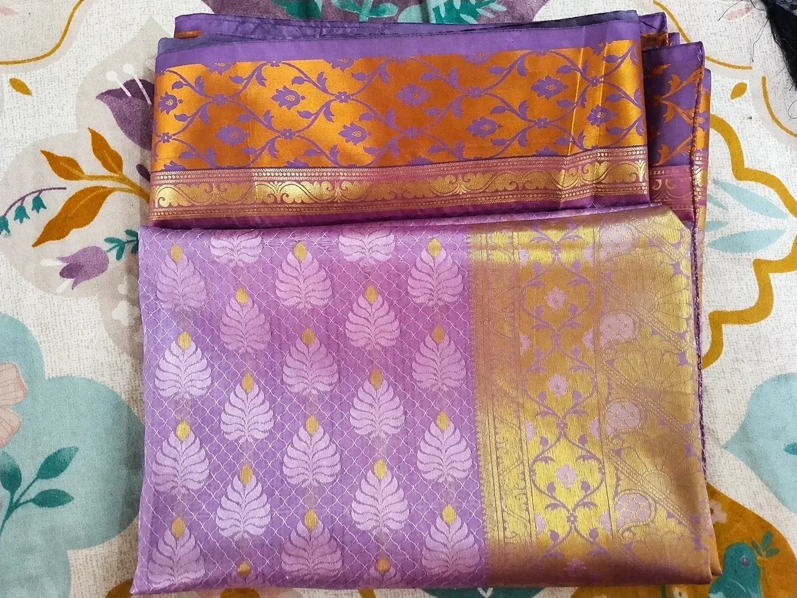
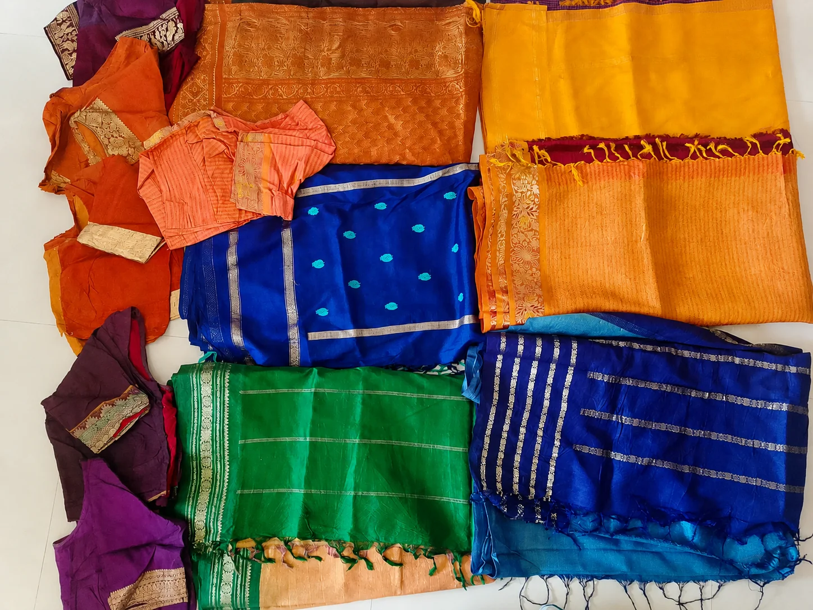
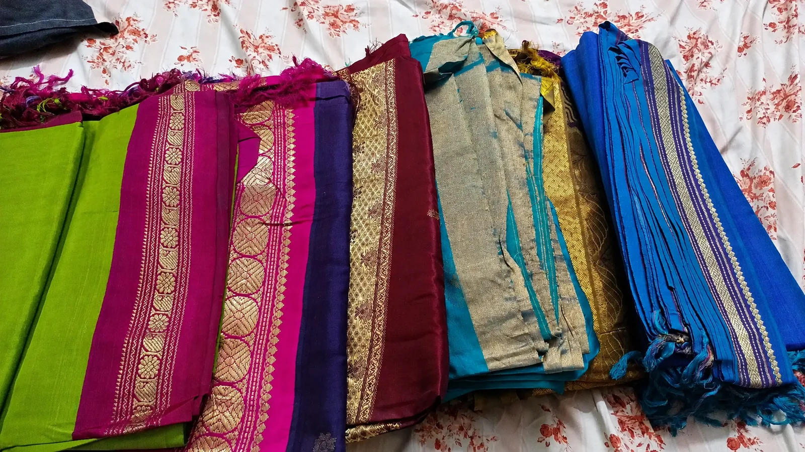
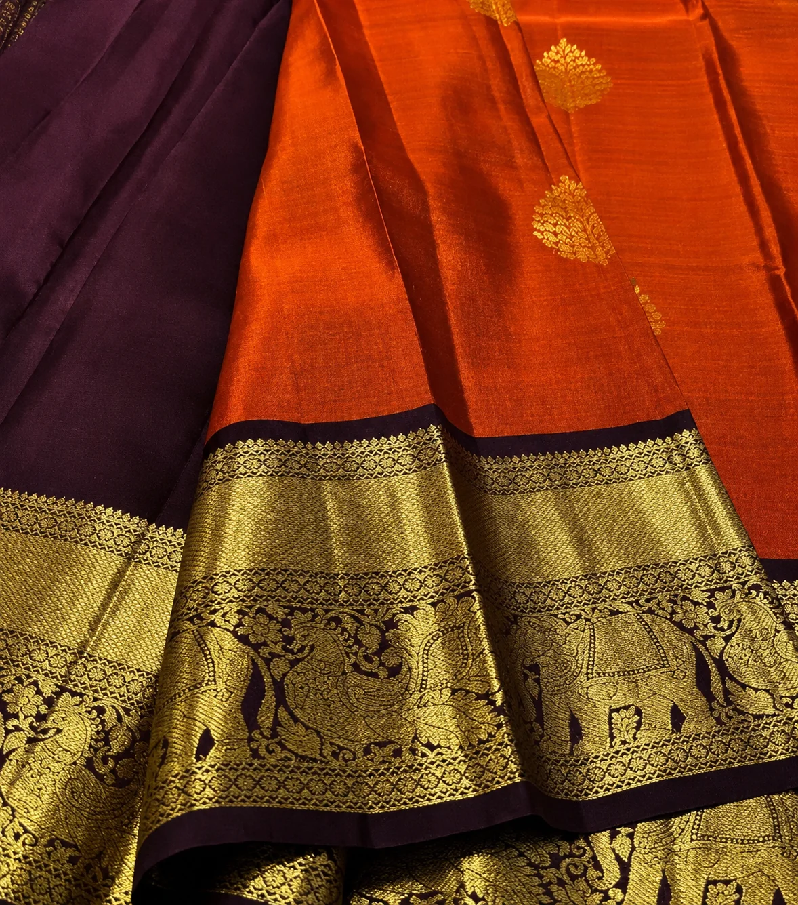
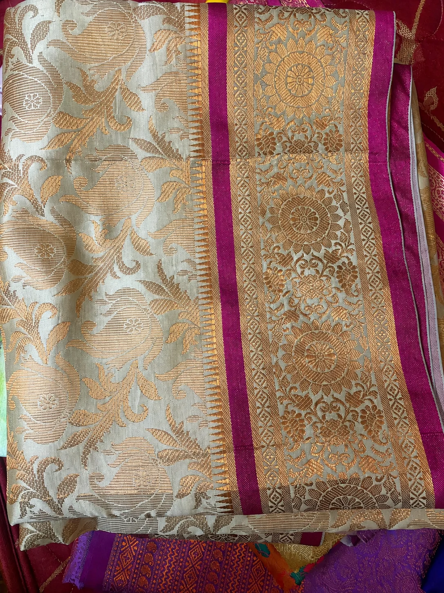
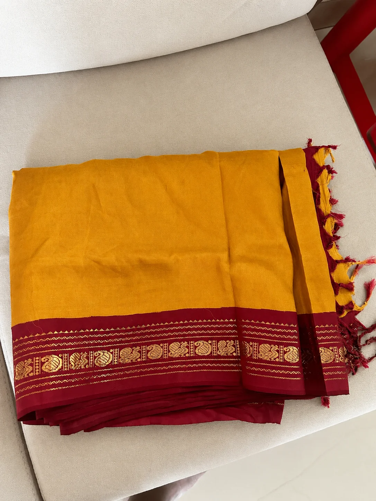
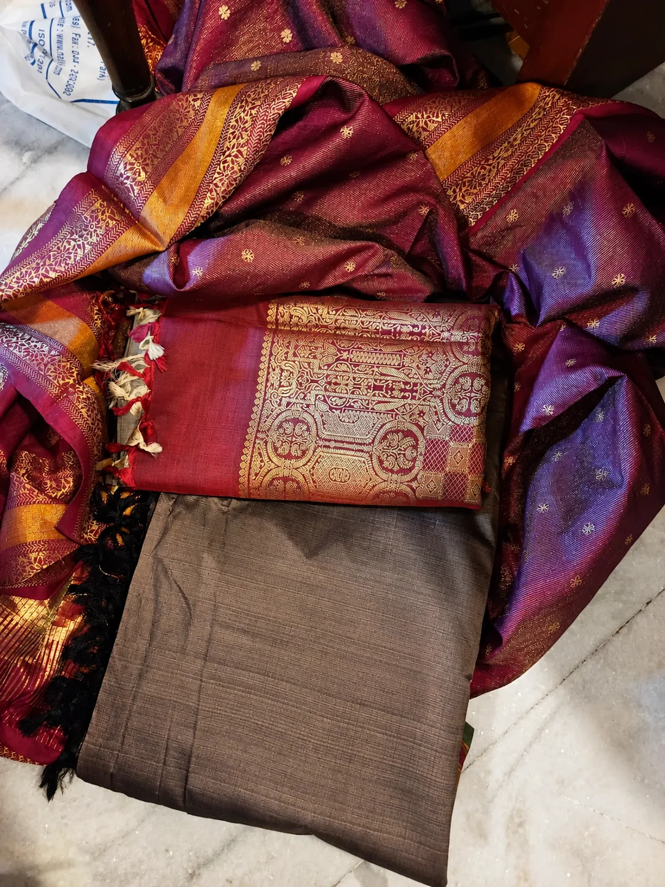
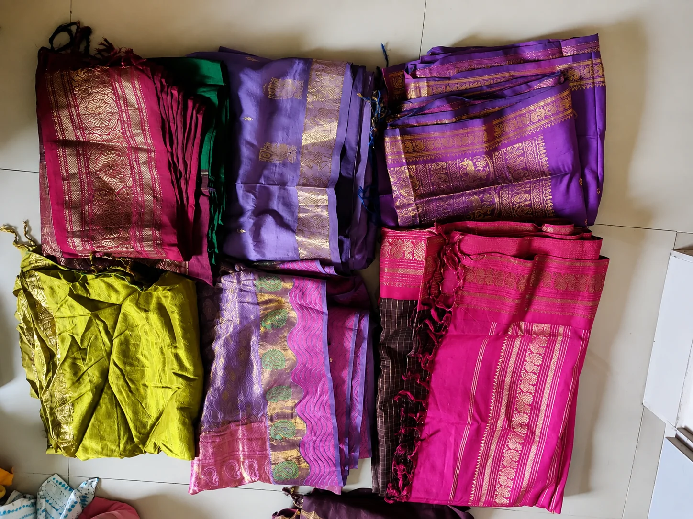
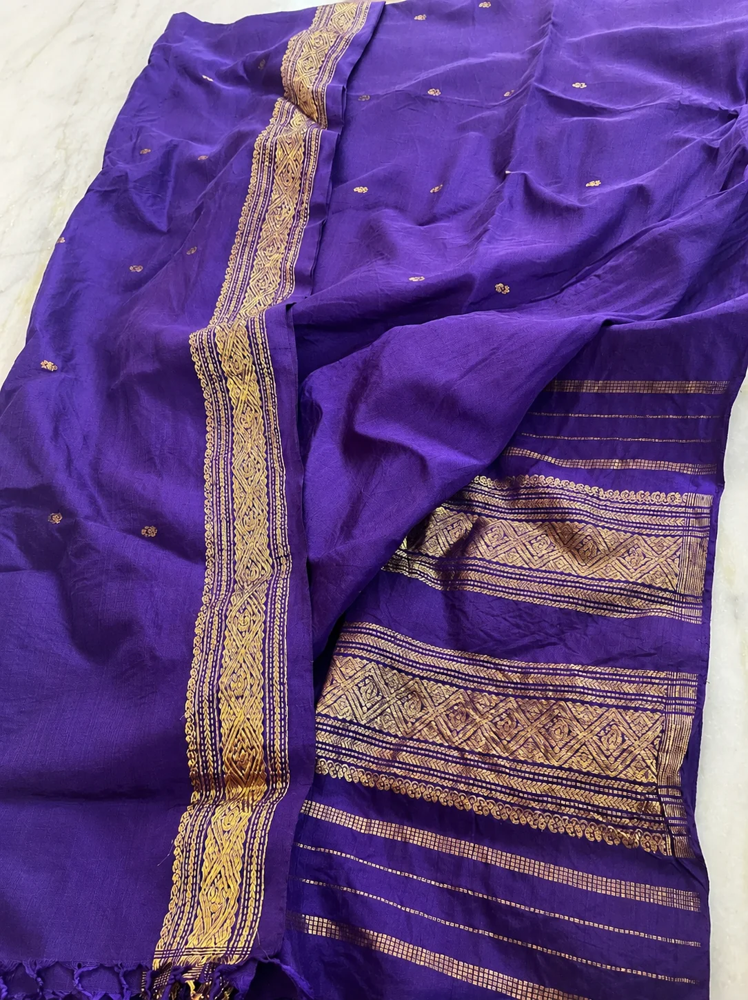

Saree Gallery
A closer look at old silk and pattu sarees we've purchased from Chennai families — real pieces, real prices.









Book a Doorstep Pickup
Fill in your details and our team will call you shortly.
Thank you, !
We've received your request and will call you shortly to arrange pickup.